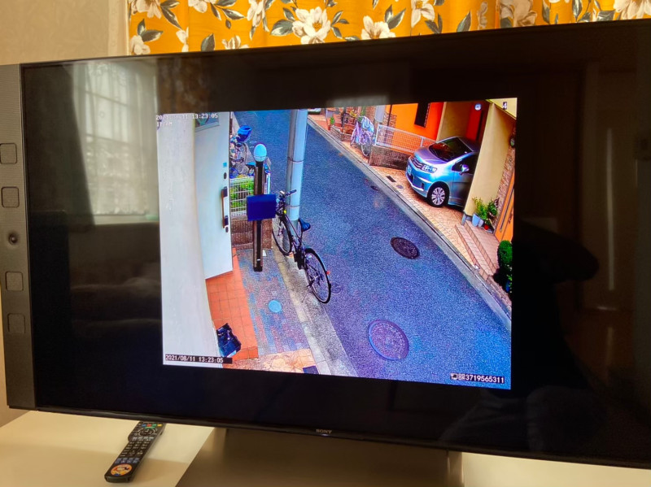
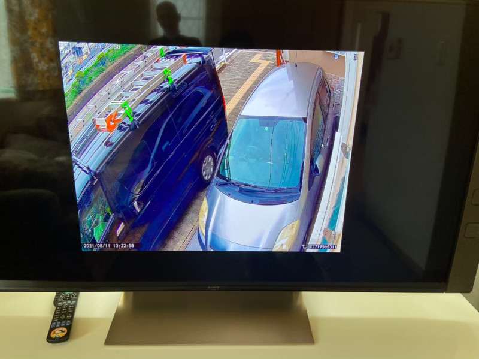

近年、一般住宅でも防犯カメラを設置するケースが増えています。空き巣や車上荒らし、不法投棄などへの対策として、防犯カメラは有効な手段の一つです。
まず「何を確認したいのか」を決める
玄関への出入りを確認したい、駐車場の車を確認したい、建物の裏側を確認したい、敷地への侵入を確認したい。目的によって設置位置は変わります。



死角をできるだけ減らす
建物の角、塀、植栽、カーポートなどによって死角が生まれることがあります。住宅の形状によっては、複数台のカメラで死角を補う方法もあります。
夜間の映像も確認
防犯上の問題は夜間に発生することもあります。暗い場所でも撮影できる機能が必要か、玄関灯や外構照明との位置関係も含めて確認しましょう。
「記録すること」と「見ること」の両方が大切
映像を何日分記録したいのか、外出先から確認したいのか、複数台を一つのモニターで確認したいのか。使い方によって必要な設備は変わります。
設置角度にも配慮を
防犯カメラがあること自体が抑止につながる場合もありますが、近隣住宅や道路などを必要以上に撮影しないよう、設置角度への配慮が必要です。